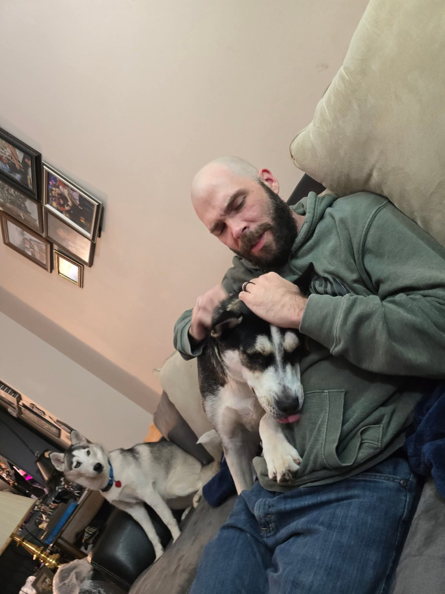

My name is Trei and I am a Graduate student at George Mason University. I recently graduated with a BS in Information Technology. I am currently completing my Masters in Software Engineering along with a Graduate Certificate in Responsible use of AI. I am currently employed with AWS as a Cloud Support Engineer. I have been with Amazon coming up 8 years, and 6 of those with AWS.
In my free time, I enjoy playing video games, reading, and spending time with my family. I recently bought a bass guitar and a violin with intentions to learn how to play each. I've always enjoyed both instruments, and played both years ago. I wanted to get back into it and become better. Since I've had some more free time coming up, I've also tried to get back into an old hobby of building scale models. I've also started working towards saving up for some hardware to build a home server to play around with some things. I've included a photo of myself with my dogs (one is not too happy they aren't getting any attention).
Under Contsruction - More to Come!